Gallery climb final comparison
Final gallery gained 7 points · Fresh blind comparison: baseline 73/100,
final 80/100 · 7 candidate rounds,
2 kept, 5 reverted
One fresh blind evaluator (Claude Opus 5.5 via T3 Code) scored both endpoints.
The climb log records historical scores. Candidate counts exclude Round 0 and the final comparison.
Stopping rule. Rounds 5–7 produced three consecutive reverts. Round 5 failed gates, and Rounds 6 and 7 gained only one point each. Round 3 grouped reports by kind and removed the duplicate kind list. Round 4 grouped the two diagnoses and became the final incumbent. Historical Round 0 scored 79/100 and Round 4 last qualified at 75/100 on a separate pair. The climb stopped short of the 90-point goal.
Ten-second selection goal. No timed test with new readers was supplied.
Gallery screenshots
Original
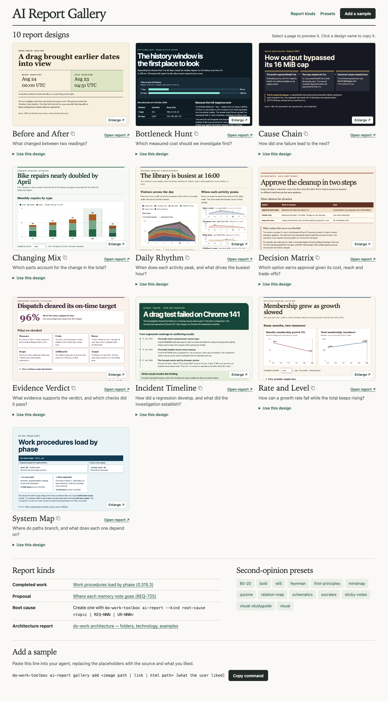
Original gallery · 1440 px · light. Captured before REQ-749 at e26f4962.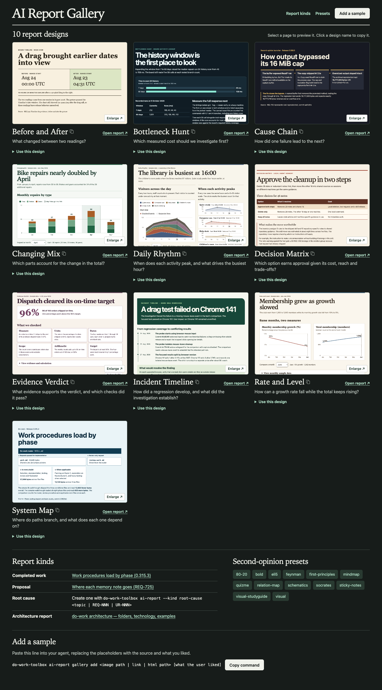
Original gallery · 1440 px · dark. Captured before REQ-749 at e26f4962.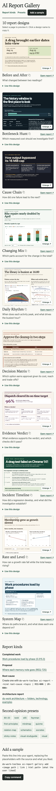
Original gallery · 390 px · light. Captured before REQ-749 at e26f4962.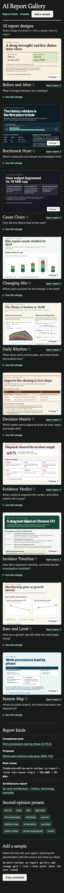
Original gallery · 390 px · dark. Captured before REQ-749 at e26f4962.Baseline
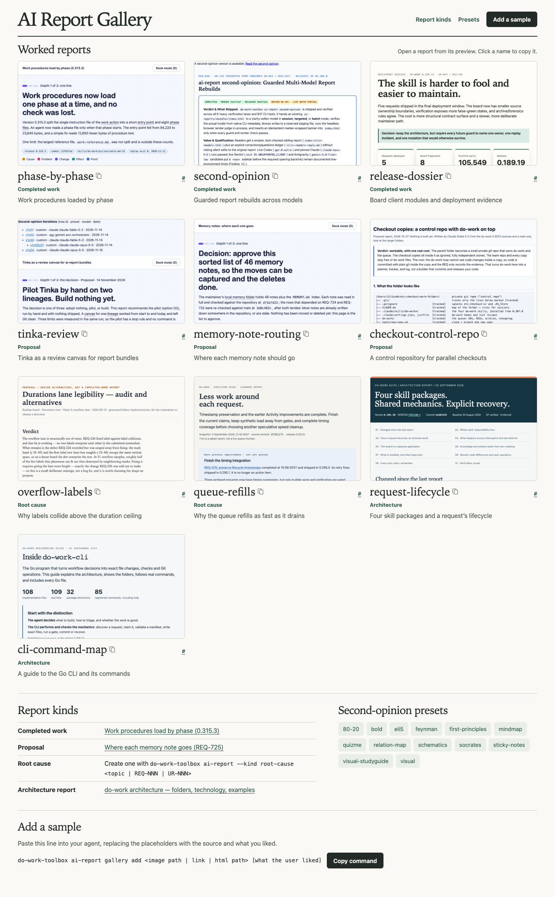
Baseline gallery · 1440 px · light. Frozen Round 0 capture. Its pixels match the fresh evaluator packet.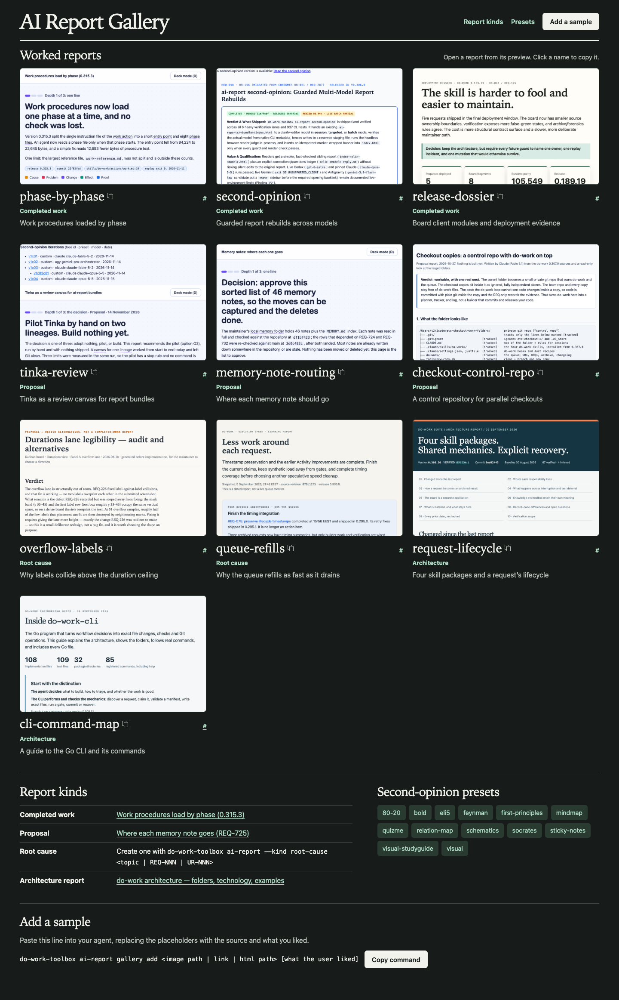
Baseline gallery · 1440 px · dark. Frozen Round 0 capture. Its pixels match the fresh evaluator packet.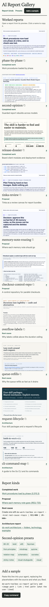
Baseline gallery · 390 px · light. Frozen Round 0 capture. Its pixels match the fresh evaluator packet.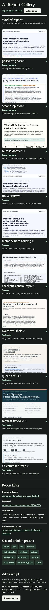
Baseline gallery · 390 px · dark. Frozen Round 0 capture. Its pixels match the fresh evaluator packet.Final
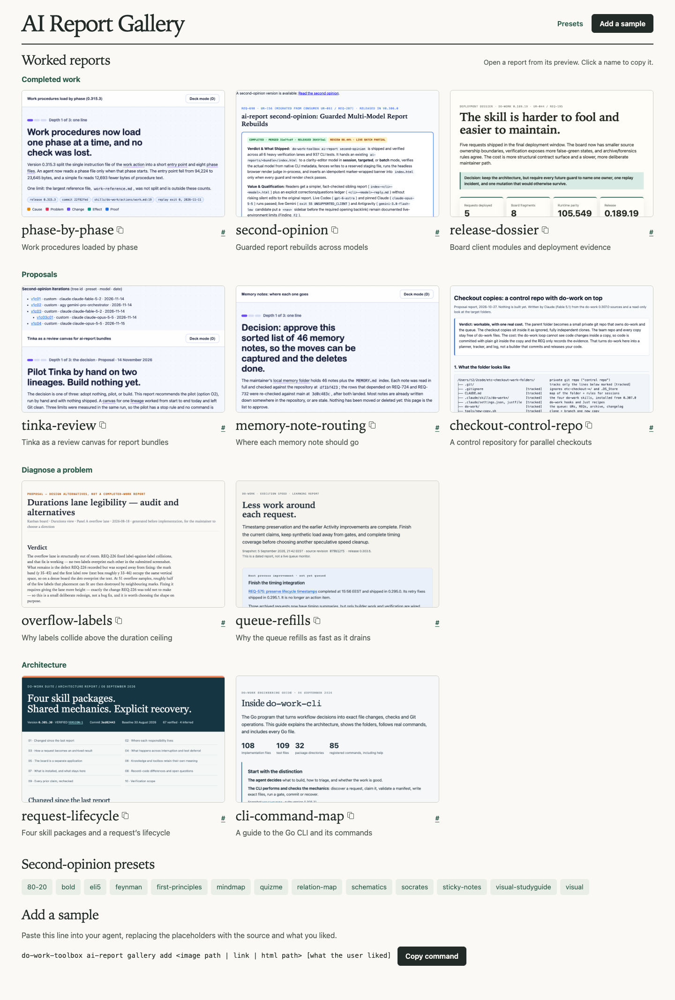
Final gallery · 1440 px · light. Recorded Round 4 gate capture. Its pixels match the fresh evaluator packet.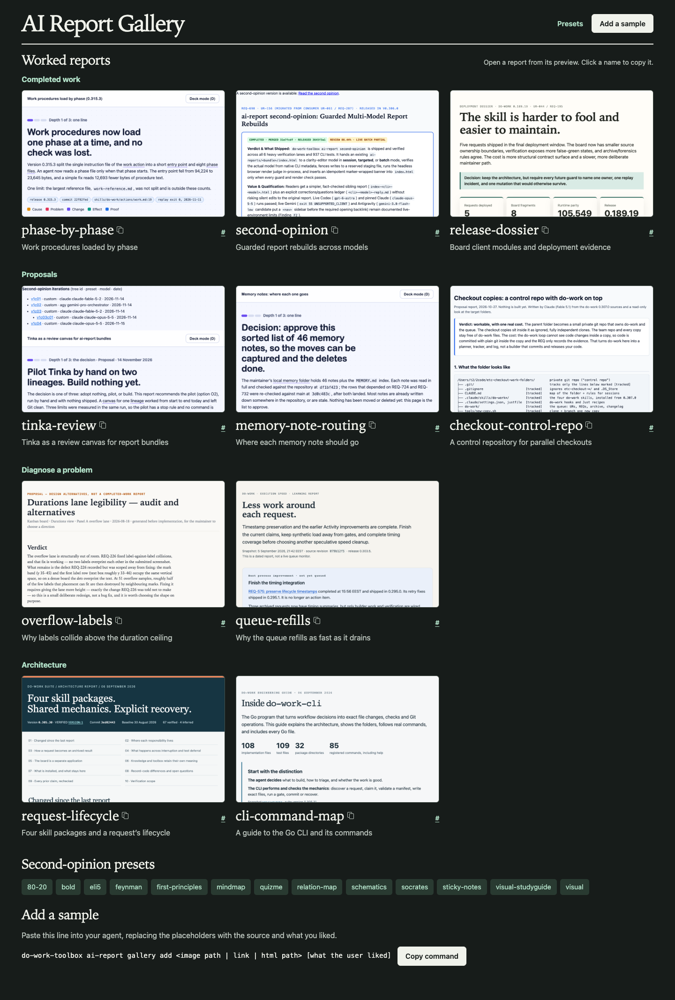
Final gallery · 1440 px · dark. Recorded Round 4 gate capture. Its pixels match the fresh evaluator packet.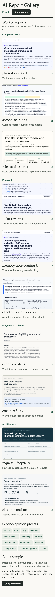
Final gallery · 390 px · light. Recorded Round 4 gate capture. Its pixels match the fresh evaluator packet.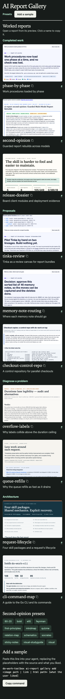
Final gallery · 390 px · dark. Recorded Round 4 gate capture. Its pixels match the fresh evaluator packet.Fresh blind rubric
| Criterion | Baseline | Final |
|---|
| R1 · Previews | 15 | 15 |
|---|
| R2 · Names | 16 | 16 |
|---|
| R3 · Choice | 15 | 18 |
|---|
| R4 · Range | 15 | 15 |
|---|
| R5 · Attention | 12 | 16 |
|---|
First choices and checked matches
Baseline
The Root cause row of the Report kinds table below the grid suggests creating an example when two already appear above. Its Architecture row also links to a different report than the card.
| Need | First choice | Result |
|---|
| I need to brief a teammate on what shipped for getting another model’s take on an existing report, including how the original is protected. | second-opinion | Match |
|---|
| I’m deciding what to do with agent guidance that lives on one machine. I need the alternatives and their trade-offs before approving changes. | memory-note-routing | Match |
|---|
| Some labels in our durations chart still collide after a fix. I need to understand why the long-running items bunch together. | overflow-labels | Match |
|---|
| I’m adding a command to the Go tool. I need to find the packages that own dispatch and implementation. | cli-command-map | Match |
|---|
Final
The first card under Diagnose a problem, overflow-labels, has a preview banner reading “Proposal — Design alternatives.” The heading and preview point readers toward different uses.
| Need | First choice | Result |
|---|
| I need to brief a teammate on what shipped for getting another model’s take on an existing report, including how the original is protected. | second-opinion | Match |
|---|
| I’m deciding what to do with agent guidance that lives on one machine. I need the alternatives and their trade-offs before approving changes. | memory-note-routing | Match |
|---|
| Some labels in our durations chart still collide after a fix. I need to understand why the long-running items bunch together. | overflow-labels | Match |
|---|
| I’m adding a command to the Go tool. I need to find the packages that own dispatch and implementation. | cli-command-map | Match |
|---|
Open decisions
- D1 · Should we test the ten-second selection goal with new readers?
- Value
- Measure selection time and accuracy for each need.
- Risk
- The evaluator’s four correct choices establish accuracy for that run. Iteration and evaluator durations measure different work.
- Recommendation
- Time unaided first choices with new readers at both widths.
- Default
- Keep the ten-second goal unmeasured.
- D2 · Should the duration-label card explicitly describe both diagnosis and alternatives?
- Value
- Clarify why a report whose cover says Proposal appears in Diagnose a problem.
- Risk
- Moving the card away would reduce visible diagnosis coverage. The Round 5 source-link failure was an iteration issue and has been reverted.
- Recommendation
- Test a short gallery description that reflects both uses and preserves the report URL and capture.
- Default
- Keep Round 4.
- D3 · Should the gallery revisit cards whose names or previews obscure their subject?
- Value
- Make release-dossier, tinka-review, second-opinion and queue-refills easier to distinguish at thumbnail size.
- Risk
- Earlier name changes did not qualify, and source screenshots must remain faithful.
- Recommendation
- Test targeted gallery wording with new readers before another climb.
- Default
- Keep the recorded names and screenshots.